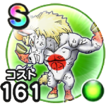

はつゆめポーン
新春ウォーク2026戦闘開始時にごくまれに自身のテンションを確率で1段階上げるこころ最大コスト+4スキルHP回復効果+8%怯え耐性+7%麻痺耐性+7% / 7.0点
くわしい特徴
【ランク特殊効果】 戦闘開始時にごくまれに自身のテンションを確率で1段階上げるこころ最大コスト+4スキルHP回復効果+8%怯え耐性+7%麻痺耐性+7%

新春ウォーク2026戦闘開始時にごくまれに自身のテンションを確率で1段階上げるこころ最大コスト+4スキルHP回復効果+8%怯え耐性+7%麻痺耐性+7% / 7.0点
【ランク特殊効果】 戦闘開始時にごくまれに自身のテンションを確率で1段階上げるこころ最大コスト+4スキルHP回復効果+8%怯え耐性+7%麻痺耐性+7%